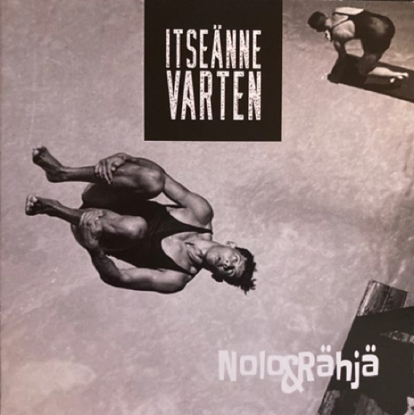

Nolo&Rähjä on legendaarinen rokkibändi Sisä-Suomen sisimmistä sisäosista, ja ollut 70-luvun alusta asti tiukasti mukana rehellisen rokin ja siihen liittyvien lieveilmiöiden tukemisessa ja kehittämisessä. Oma tuotanto rakentuu suomalaisista sanoista ja soinnuista, Manserokin hengessä.
N&R on jälleen jalkautunut elämää pursuaviin mestoihin yleisönsä ja itsensä riemuksi ja ihmetykseksi. Seuraa keikkakalenteria ja saavu kannustamaan rokin ikiliikkujat ja itsesi taivaallisiin akordeihin!
Vuosi 2022 on bändin merkkivuosi jolloin tulee kuluneeksi 50 vuotta sähköisen bändin perustamisesta. Juhlan kunniaksi julkaisimme uuden CD-levyn joka sai nimekseen Itseänne varten. Levyn, samoin kuin osan aikaisemmista tuotoksistamme, voi tilata puodista.
Toivotaan että pian koittaa taas normaalimpi aika, keikkarumba käynnistyy ja keikkakalenteriin tulee muutamia osumia!
